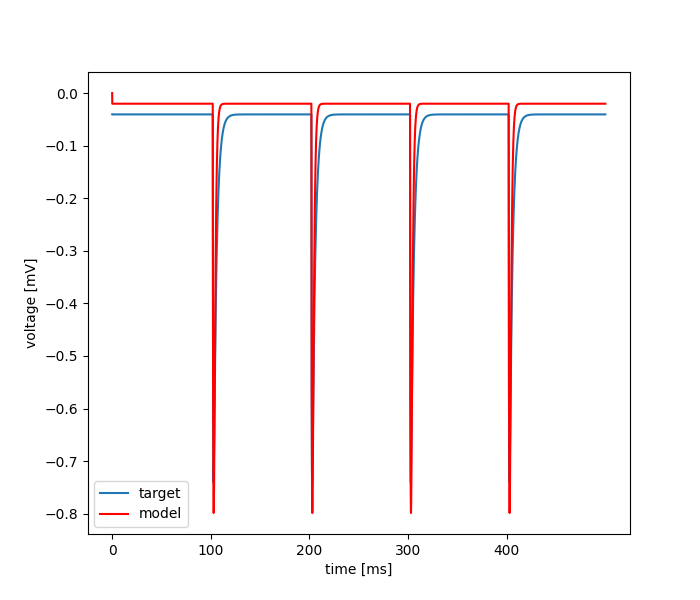

Thu Feb 11 23:35:35 2021
Optimization of simple_hh_syn_vclamp_toopt2.hoc based on: /home/mohacsi/work/optimizer/optimizer/new_test_files/VClamp_surrogate/iclamp_new.dat
Results
| Parameter Name | Minimum | Maximum | Optimum |
|---|---|---|---|
| weight | 0.001 | 1.0 | 0.022241154032756085 |
| delay | 0.0 | 5.0 | 1.9375000000492042 |
| tau_rise | 0.001 | 1.0 | 0.9547811256813925 |
| tau_decay | 0.1 | 5.0 | 0.9548766133508675 |
Fitnes: 0.001366170632265401

seed = 1242.0
evo_strat = Nelder-Mead - Scipy
Size of Population: = 100.0
Number of Islands: = 1.0
Number of Generations: = 10000.0
Force bounds: = True
Mutation Rate: = 0.25
Crossover Rate: = 1
Cooling Rate: = 1
Mean of Gaussian: = 1
Std. Deviation of Gaussian: = 1
Initial Temperature: = 1
Step Size: = 1
Temperature: = 1
Update Frequency: = 1
Number of Iterations: = 1
Number of Repetition: = 1
Error Tolerance for x: = 1e-28
Error Tolerance for f: = 1e-27
num_params = 4
boundaries = [[0.001, 0.0, 0.001, 0.1], [1.0, 5.0, 1.0, 5.0]]
starting_points = 1
Inertia: = 1
Cognitive Rate: = 1
Social Rate: = 1
Neighborhood Size: = 1
Number of CPU: = 2
feats = MSE, Derivative difference
weights = [0.5, 0.5]
user function =
def usr_fun(self,v):
#4
#weight
#delay
#tau_rise
#tau_decay
h.nc.weight[0] = v[0]
h.nc.delay = v[1]
h.ampasyn.tau1 = v[2]